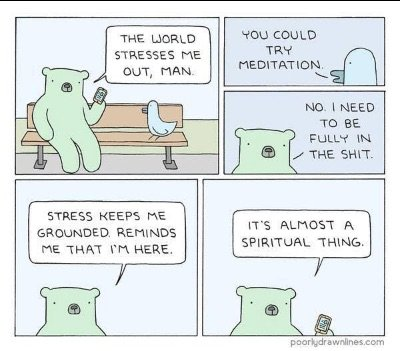

I had some oral surgery last Friday. Yes, it was as much fun as you probably imagine.
Pain, swelling, foggy head (thanks RX! And also a caution for what follows in this Tickler because, y’know, still drugged up).
For now, we shall call this “suffering.”
Ugh. Don’t like.
Part of the aftercare instructions were to eat only very soft foods for 2 weeks.
Which might sound like more suffering, until we consider that it means mashed potatoes, mac ‘n cheese, mousses and puddings. So I’ve been instructed to eat, on purpose, foods grown-ups often don’t indulge in too much, at least without some personal finger-wagging and scolding.
Free pass for me. Like!
And let’s not forget Dr-approved, allowed-for-3-days sleep.
Extra like!
Well dang, this is confusing isn’t it?
I mean, is suffering supposed to be so delightful?
After all, as everyone knows, suffering is bad. Don't like is bad.
In fact, don't like EQUALS bad. It’s the very definition of bad.
And therefore, no thanks.
Because no way anything we don't like could be good. There can’t possibly be any benefit in any thing we don't like. Only like could be good.
Which is convenient.
Since it’s almost as if good and bad actually revolve around little ol’ me’s preferences and evaluations.
As if our likes and dislikes determine right, wrong, bad, good.
Y’know, all powerful us. Knowers of good and bad. Creators of worlds.
When actually, regardless of whether suffering is physical or emotional,
This automatic equivalence between sensation and like or dislike often makes experience more intense and more flat-out miserable.
Because then it’s personal.
As in person-al.
As in, likes and dislikes separate us into me and not-me. Me the sufferer, the one who experiences, who is different and separate from experience itself.
Which expands into me the one who needs to learn the lesson in this, or the one being punished, or the one unfairly attacked by existence.
Turns out, likes and dislikes impose a small point-of-view center on a very vast existence.
And make the sense of self feel solid, and real, and like a thing.
Which is fine of course.
Unless we don't like suffering.
Which, I’m pretty sure, we don’t.
Luckily, we can simply consider the possibility that we what we are is the experience itself, the sensation, the happening, rather than the liker or disliker it's happening to…
And the me-story begins to decentralize.
Evaluation fizzes out. Likes and don’t-likes become irrelevant.
Experience is seen to be What We Are, rather than something happening to us.
The sense of a solid self goes pfffft.
Often taking suffering with it.
Because existence has no preferences. All experience is equal, neutral at least, and fond at best, of all happenings.
Including so-called pain and suffering.
Which is not denial, or bypassing, or avoidance.
We still feel, or we don’t, we still like, or we dislike. All equal, all welcome, all happening.
This is simply seeing what we really are for a moment.
And we have suffering to thank for that glimpse of truth.
Which, for so many seekers of enlightenment,
And for so many folks in pain,
Just might be,
A very big,
An incomprehensibly big,
Like.
every week.
"Nothing is either good or bad but thinking makes it so." --Shakespeare
"Life is hard.
Then you die.
Then they throw dirt in your face.
Then the worms eat you.
Be grateful it happens in that order."
-- David Gerrold
Suffering- Don't Like!
